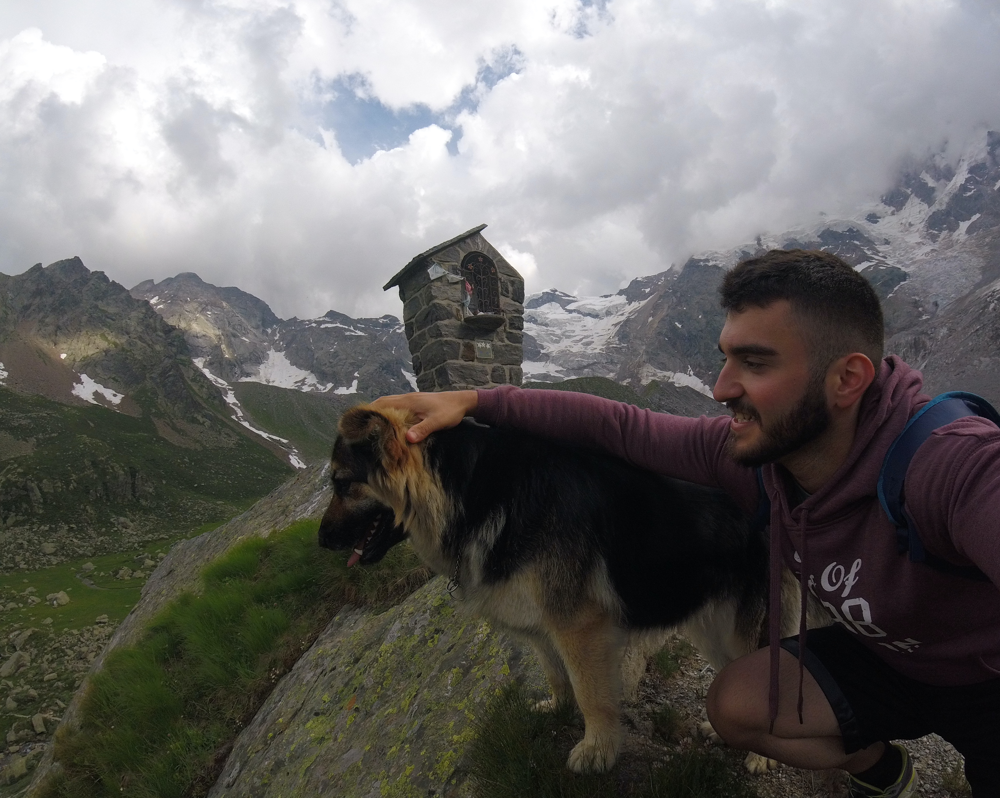

Ph.D. in Natural Sciences
Thesis: "Ecology and evolution of the invasive spider Mermessus trilobatus in Europe." Supervisor: Prof. Dr. Martin Entling

Postdoctoral Researcher | Behavioural Ecology & Molecular Evolution
Mainz, Germany | nijat.nariman@gmail.com
ORCID · Links · Google Scholar
I investigate the behavioural ecology and evolutionary dynamics of invasive species and agricultural pests, combining genomics, functional genetics, chemical ecology and experimental evolution. My research addresses fundamental questions about dispersal, reproduction, insecticide resistance evolution and predator–prey interactions, with insights relevant to invasion management and pest control. From January 2027, I lead the DFG-funded project “Genetic architecture of an invasion” at Trier University, which aims to identify the genomic regions underlying high dispersal and fecundity in the invasive spider Mermessus trilobatus. In parallel, I am completing my work on how selection pressures shape insecticide resistance, life-history traits and host plant adaptation in the Colorado potato beetle. In the future, I aim to uncover the molecular mechanisms that drive invasion success and resistance evolution.
Thesis: "Ecology and evolution of the invasive spider Mermessus trilobatus in Europe." Supervisor: Prof. Dr. Martin Entling
Thesis: "Effects of personality and chemical cues on non-consumptive effects of ants on spiders."
"Genetic architecture of an invasion (GAI): Identifying genomic regions associated with high dispersal and fecundity in an invasive spider."
First-Author Publications
Co-Authored Publications
Ad hoc reviewer (2021–present) for 15+ international journals across ecology and evolution.
Email: nijat.nariman@gmail.com
Location: Mainz, Rheinland-Pfalz, Germany